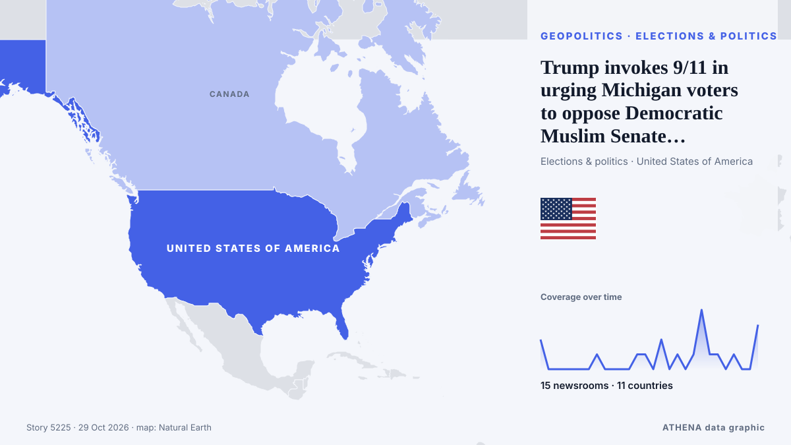

Trump invokes 9/11 in urging Michigan voters to oppose Democratic Muslim Senate candidate El-Sayed

PORT HURON, Michigan: President Donald Trump at a Sunday campaign rally ratcheted up his push to link US Senate candidate Abdul El-Sayed to Muslim extremists, comparing him to the 9/11 attackers… von Arab News
Unabhängig gemeldet von 15 Medien in 11 Ländern seit dem 15. Okt., zuerst von APA (English); die Berichterstattung ist abgeklungen. ATHENA stuft das Risiko als niedrig ein (1.0/10), vor allem wegen der Schwere des beschriebenen Schadens und seiner geografischen und sektoralen Reichweite. Die Konfidenz liegt bei 93 % (hoch): 15 Medien bestätigen es unabhängig, bei einer mittleren Verlässlichkeit der Quellen von 76 %. Medien nach Land: Vereinigte Staaten (4), Vereinigte Arabische Emirate (3), Pakistan (2). Berichterstattung: 15. Okt. bis 29. Okt., 335 Stunden.
Warum es wichtig ist: Sicherheits- und diplomatische Entwicklungen können Bündnisse, Handel und Märkte weit über die direkt beteiligten Länder hinaus verschieben.
Was sich geändert hat: 3 neue Berichte von 3 Redaktionen in den 24 Stunden bis 29. Okt..
Erste Schlagzeile: Trump accuses Michigan Senate candidate Abdul El-Sayed of Muslim Brotherhood ties
Schlagzeilen werden auf Englisch angezeigt, wie veröffentlicht.
Auf einen Blick
Ausgewählt, bewertet und geschrieben nach der veröffentlichten Methodik von ATHENA. Kein Redakteur greift in einzelne Ereignisse ein. So entsteht ATHENA ›
| 15 Oct 19:27 UTC | 2 |
|---|---|
| 16 Oct 07:27 UTC | 0 |
| 16 Oct 19:27 UTC | 0 |
| 17 Oct 07:27 UTC | 0 |
| 17 Oct 19:27 UTC | 0 |
| 18 Oct 07:27 UTC | 0 |
| 18 Oct 19:27 UTC | 0 |
| 19 Oct 07:27 UTC | 1 |
| 19 Oct 19:27 UTC | 0 |
| 20 Oct 07:27 UTC | 0 |
| 20 Oct 19:27 UTC | 0 |
| 21 Oct 07:27 UTC | 0 |
| 21 Oct 19:27 UTC | 1 |
| 22 Oct 07:27 UTC | 1 |
| 22 Oct 19:27 UTC | 0 |
| 23 Oct 07:27 UTC | 2 |
| 23 Oct 19:27 UTC | 0 |
| 24 Oct 07:27 UTC | 1 |
| 24 Oct 19:27 UTC | 0 |
| 25 Oct 07:27 UTC | 1 |
| 25 Oct 19:27 UTC | 4 |
| 26 Oct 07:27 UTC | 1 |
| 26 Oct 19:27 UTC | 1 |
| 27 Oct 07:27 UTC | 0 |
| 27 Oct 19:27 UTC | 1 |
| 28 Oct 07:27 UTC | 0 |
| 28 Oct 19:27 UTC | 0 |
| 29 Oct 07:27 UTC | 3 |
| 17 Oct 11:31 UTC | 0.0 |
|---|---|
| 25 Oct 23:18 UTC | 1.0 |
| 29 Oct 18:30 UTC | 1.0 |
Warum diese Zahlen
Bedeutung
Risiko
Konfidenz
Die Berichterstattung – wer berichtete, und wann
Schlagzeile wie veröffentlicht · öffnet das Original- APA (English) · AserbaidschanTrump accused a Senate candidate of having ties to Muslim Brotherhood
- The National · Vereinigte Arabische EmirateTrump accuses Michigan Senate candidate Abdul El-Sayed of Muslim Brotherhood ties
- NPR · Vereinigte StaatenMichigan's Democratic Senate candidate Abdul El-Sayed campaigns in GOP stronghold
- The Hill · Vereinigte StaatenEl-Sayed, Rogers face off in last Michigan Senate debate: 3 takeaways
- The Hill · Vereinigte StaatenEl-Sayed’s alleged ties to Muslim Brotherhood shake up Michigan Senate race
- Express Tribune · PakistanRepublican ‘Muslim Brotherhood’ attacks on El-Sayed seek to exploit Democratic divisions
- Dawn · PakistanRepublican 'Muslim Brotherhood' attacks on Abdul El-Sayed in Michigan seek to exploit Democratic fault lines
- The Hill · Vereinigte StaatenEl-Sayed spats with Baier over Muslim Brotherhood question: 'Be a journalist'
- The Straits Times · SingapurTrump invokes 9/11 in urging Michigan voters to oppose Muslim Senate candidate El-Sayed
- Anadolu Agency (English) · TürkeiTrump uses Michigan rally to attack Democratic Senate candidate El-Sayed
- The Jerusalem Post · IsraelTrump invokes 9/11 in urging Michigan voters to oppose Muslim Senate candidate El-Sayed
- Arab News · Saudi-ArabienTrump invokes 9/11 in urging Michigan voters to oppose Democratic Muslim Senate candidate El-Sayed
- NDTV · IndienTrump Calls Michigan Senate Candidate "Jihadist," Questions Loyalty To US
- Times of India · IndienCan the man Trump called a 'jihadist' become America's first Muslim senator?
- The National · Vereinigte Arabische EmirateAbdul El-Sayed’s election race is one of America’s most consequential in recent years
- The National · Vereinigte Arabische EmirateThe name game: Abdul El-Sayed’s Senate bid tests the limits of US politics
- Mothership · SingapurWho's Abdul El-Sayed, the 41-year-old who could become the 1st Muslim US senator?
- The Guardian · Vereinigtes KönigreichHow Laura Loomer and Trump allies amplified ‘Muslim Brotherhood’ lie dogging Abdul El-Sayed
- Al Jazeera English · KatarUS Muslims concerned but resilient as ‘hate’ attacks target Abdul El-Sayed